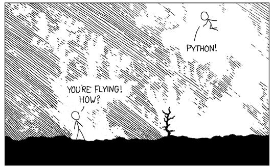

Pokročílí 4: Moduly¶
Ak máme väčší program, je vhodné zdrojový kód rozdeliť do viacerých súborov. Na dnešnom cvičení si vysvetlíme, akým spôsobom Python umožňuje spravovať väčšie projekty.
Na zopakovanie si pripomenieme, že doteraz sme si ukázali 2 módy spúšťania programov v Pythone
- interaktívny mód - spustíme príkazom
python - skriptovací mód - skript uložený v súbore
script.pyspustíme príkazompython script.py
Modul¶
def faktorial(n):
if n == 0: return 1
return n * faktorial(n - 1)
def fib(n):
if n == 0: return 0
if n == 1: return 1
return fib(n - 1) + fib(n - 2)
def obrat(s):
if len(s) < 2: return s
return s[-1] + obrat(s[:-1])
def main():
print("V tomto module su nasledovné funkcie:")
print(f"- Faktoriál (faktoriál čísla 30 je {faktorial(30)})")
print(f"- Fibonacciho číslo (fibonacci na pozícii 30 je {fib(30)})")
print(f"- Obrátenie reťazca ({obrat("Obrátenie reťazca")})")
if __name__ == '__main__':
main()
Modul má svoj vlastný izolovaný priestor na premenné a funkcie, takže veci zadefinované v module sú oddelené od iných modulov a navzájom sa neovplyvňujú. Ináč povedané, každý modul má svoj vlastný priestor mien (namespace) – teda slovník premenných a funkcií, ktoré sú v ňom definované.
Používanie modulov¶
Moduly, ktoré si vytvorím, viem použiť v iných moduloch môjho programu. Na to, aby som mohol daný modul plne využívať je potrebné ho 'importovať' pomocou príkazu import .... Po úspešnom importovaní môžem napr. volať funkcie daného modulu. Importované funkcie musím pri volaní prefixovať s názvom modulu, napr. util.faktorial(10)
Druhá možnosť je importovať priamo funkcie, ktoré budem používať. To sa robí pomocou príkazu from ... import .... V tomto prípade budú importované iba vybrané funkcie, modul samotný sa volať dať nebude.
Existuje ešte tretia možnosť, a to importovať všetky veci z daného modulu. Robí sa to pomocou príkazu from ... import *. Tento spôsob môže byť ale veľmi nebezpečný, preto ho neodporúčame používať.
Vytváranie aliasov¶
Niekedy sa stane, že vo svojom programe už máme funkciu s rovnakým názvom, ako tú, ktorú chcem importovať. V takých prípadoch máme možnosť importovať funkciu pod iným menom, tzv. aliasom. Iné meno môžeme priradiť funkcii alebo aj celému modulu. V oboch prípadoch to robíme v importe pomocou voľby as ....
Učím sa s pomocou umelej inteligencie
Som študent strednej školy, učím sa Python. Vysvetli mi ako rôzne viem importovať modul alebo jeho časť?
Spúšťanie 'modulárnych' projektov¶
Ak mám už svoj program napísaný vo forme viacerých modulov, má sa už spúšťať ináč ako keď som mal iba jeden súbor (skript). Pri spúšťaní takého projektu mám zvyčajne jeden "hlavný" modul, ktorý obsahuje vstupný bod programu. Na spustenie tohto modulu použijem príkaz python -m a názov modulu, ktorý chcem spustiť, teda napr. python -m main. Všimnite si, že som už nenapísal názov súboru s príponou, ale názov modulu a použil som voľbu -m, ktorá hovorí, že spúšťam modul a nie skript.
# Python v interaktívnom móde
python
# Spustenie Python skriptu
python script.py
# Spustenie Python modulu
python -m modul

V Pythone na lietanie používame import antigravity
Balík¶
Ak máme modulov veľa, je vhodné ich rozdeliť do skupín pre ľahšiu prehľadnosť. Na to nám v Pythone slúžia balíky (anglicky packages). Balík v Pythone je adresár, ktorý v sebe obsahuje súbory s modulmi. Názov balíka je názov adresára. Balíky v sebe môžu obsahovať ďalšie balíky.
V nasledujúcom príklade si vytvoríme adresár tvary a v ňom budeme mať 3 súbory:
Importovanie modulov v balíkoch je podobné ako importovanie obyčajných modulov. Názvy balíkov a modulu oddelíme bodkou. V nasledujúcom príklade si ukážeme rôzne možnosti importovania.
Absolútne a relatívne importovanie¶
Všetky predchádzajúce príklady importovania používali absolútne importovanie. To znamená, že mali plnú cestu k modulu. Nezáleží z akého modulu robíme import, čí je v nejakom balíku alebo nie. Absolútny import používa vždy plnú cestu k modulu, s uvedením všetkých balíkov, v ktorých sa nachádza.
V niektorých prípadoch môže byť vhodné použiť tzv. relatívny import, keď napríklad chcem importovať modul z toho istého balíka v akom práve sme, ale je nám jedno ako sa balík volá. Náš modul štvorec si napríklad vieme upraviť tak, aby používal funkcie z modulu obdĺžnik, ktorý je v tom istom balíku.
Učím sa s pomocou umelej inteligencie
Som študent strednej školy, učím sa Python. Vysvetli mi absolútny a relatívny import. Uveď všetky druhy relatívneho importu a ukáž na príkladoch
Relatívny import vie odkazovať aj na rodičovské a iné balíky v rámci projektu. Nasledovný kód ukazuje rôzne príklady použitia relatívneho importu.
from . import modul # relatívny import z rovnakého balíka
from .. import balík # relatívny import z nadradeného balíka
from .modul import funkcia # import symbolu z modulu v rovnakom balíku
from ..balík import trieda # import symbolu z modulu v nadradenom balíku
from ... import nadbalík # relatívny import o dve úrovne vyššie
from ...balík import modul # relatívny import z balíka o dve úrovne vyššie
from . import modul as alias # relatívny import s aliasom
from .modul import * # relatívny import všetkých symbolov z modulu
Importovanie balíka¶
Okrem importovania modulu alebo jeho funkcií vieme v Pythone importovať aj samotný balík. V našom príklade s tvarmi by sme import balíka tvary zapísali ako import tvary.
Import balíka, teda spustenie súboru __init__.py sa vykoná keď importujeme balík, ale aj keď importujeme akýkoľvek modul alebo balík, ktorý je vo vnútri daného balíka. Teda __init__.py balíka tvary sa vykoná aj v nasledovných prípadoch:
import tvary.stvorec
from tvary import stvorec
from tvary.stvorec import obvod
Samozrejme súbor __init__.py sa spustí iba prvý krát, podobne ako je to pri moduloch.
Spúšťanie balíka¶
Pri moduloch sme si ukazovali, že program napísaný pomocou modulov je potrebné spúšťať pomocou príkazu python -m modul. Pri moduloch v balíkoch je to rovnaké. Ak máme modul v nejakom balíku, program spustíme pomocou python -m balik.modul
V Pythone však vieme spustiť aj samotný balík, pomocou príkazu python -m balik. Teda spustiť môžeme rovnako modul alebo balík. Ak spúšťame samotný balík, python spustí špeciálny súbor __main__.py, ktorý bude hľadať v danom balíku. Ak sa tam ten súbor nenachádza, Python vypíše chybu.
Pokročilé techniky
V súvislosti s modulmi a balíkmi je vhodné ešte spomenúť nasledovné veci (dobrovoľné učivo):
- aké všelijaké premenné a funkcie máme zadefinované alebo importované v aktuálnom mennom priestore aktuálneho modulu vieme zistiť pomocou funkcie
dir() - množinu symbolov, ktoré sa importujú pri použití
from modul import *, je možné zadefinovať pomocou špeciálnej premennej__all__, ktorú uvedieme v danom module či balíku. - Pomocou premennej
sys.modulesmôžeme zistiť, ktoré balíky a moduly už máme v našom programe importované. - Python pri importovaní vyhľadáva súbory s modulmi na rôznych miestach na disku. Všetky tieto cesty si môžeme pozrieť a aj zmeniť pomocou premennej
sys.path. - Ak chceme doplniť adresárovú cestu pre importovanie modulov, môžeme tak urobiť pomocou premennej prostredia
PYTHONPATH
Úlohy na precvičenie¶
Úloha 4.1: Balík kalkulačka
Vytvor balík kalkulacka, ktorý bude mať:
zakladne.py(sčítanie, odčítanie, násobenie, delenie)pokrocile.py(faktoriál, mocnina, odmocnina)
V main.py napíš jednoduchý textový program, ktorý načíta od používateľa operáciu a čísla a zavolá správnu funkciu.
Bonus: napíš __init__.py, ktorý zjednotí všetky funkcie.
Zhrnutie cvičenia¶
- Modul - viem vytvoriť ako súbor s príponou
.py- Každý modul má svoj vlastný priestor mien (namespace)
- Pri importovaní sa modul spustí a vykoná iba pri prvom importe
-
import modul- importované funkcie volám s názvom modulu (modul.funkcia()) -
from modul import funkcia -
from modul import funkcia as f -
import modul as m -
from modul import *- neodporúča sa - Spustenie Python modulu
python -m modul
- Špeciálna premenná
__name__- Pomocou nej vieme v programe rozlíšiť, či bol súbor použitý ako modul alebo bol spustený ako program.
- Python nastaví špeciálnu premennú
__name__na hodnodu__main__ak bol modul spustený ako program -
if __name__ == '__main__': main()
- Balík (package) - adresár s modulmi
- Názov balíka je názov adresára. Balíky v sebe môžu obsahovať ďalšie balíky
- Importovanie modulov v balíkoch je podobné ako importovanie obyčajných modulov. Názvy balíkov a modulu oddelíme bodkou.
-
import balik -
import balik.modul -
import balik.balik.balik.modul -
from balik.modul import funkcia -
from balik import modul - Absolútny import - plná cesta, bez úvodnej bodky
- Relatívny import - začína bodkou, hľadá sa od aktuálneho balíka/adresára
-
from . import modul -
from .. import balík -
from .modul import funkcia
- Špeciálny súbor
__init__.py- Python tento súbor vykoná pri importe daného balíka
- Používa sa na zotriedenie funkcií, ak ich chceme mať na jednom mieste
- Špeciálny súbor
__main__.py- Python tento súbor vykoná pri spustení balíka ako programu
- Spúšťa sa pomocou
python -m balik
Poznámky do zošita
V zošite je potrebné mať napísané aspoň tieto poznámky:
MODUL
Väčšie projekty rozdeľujeme do viacerých súborov - modulov
Každý modul má svoj vlastný priestor mien (namespace)
Ak chcem použiť nejaký modul, musím ho importovať
Pri importovaní sa modul spustí a vykoná iba pri prvom importe
Syntax importovania modulov:
import ...
from ... import ...
import ... as ...
from ... import ... as ...
Špeciálna premenná __name__
Používa sa na rozlíšenie, či modul importujem alebo ho spúšťam
if __name__ == '__main__': main()
BALÍK
Je to adresár s modulmi. Názov balíka je názov adresára.
Balíky v sebe môžu obsahovať ďalšie balíky.
Importovanie modulov v balíkoch je podobné ako importovanie obyčajných modulov.
Názvy balíkov a modulu oddelíme bodkou.
Absolútny import - plná cesta, bez úvodnej bodky
Relatívny import - začína bodkou, hľadá sa od aktuálneho balíka/adresára
Špeciálny 'balíkový' súbor __init__.py
Volá sa pri prvom importe daného balíka
Špeciálny 'balíkový' súbor __main__.py
Volá sa pri spustení balíka ako programu
Skúšanie a kontrola vedomostí
Okruhy otázok na test:
- Čo je modul, čo je balík
- Ako zistím, či sa modul spustil ako program, alebo či sa importoval
- Importovanie modulov a funkcií z modulov
- Použitie aliasu pri importovaní
- Importovanie balíkov
- Relatívne a absolútne importovanie
- Špeciálne súbory
__init__.pya__main__.py. Význam a použitie - Ako spustím modul projektu, ako spustím balík?